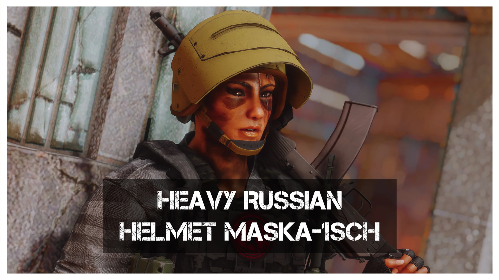
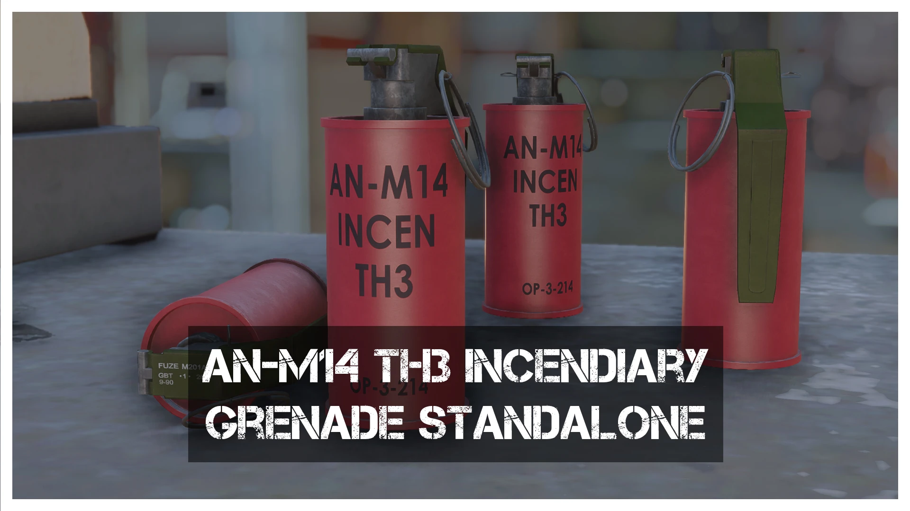
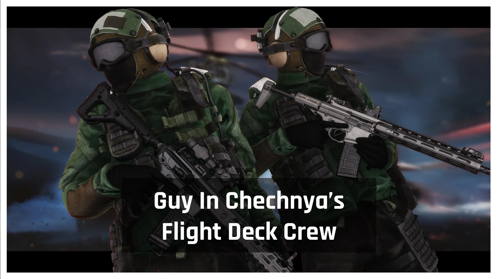
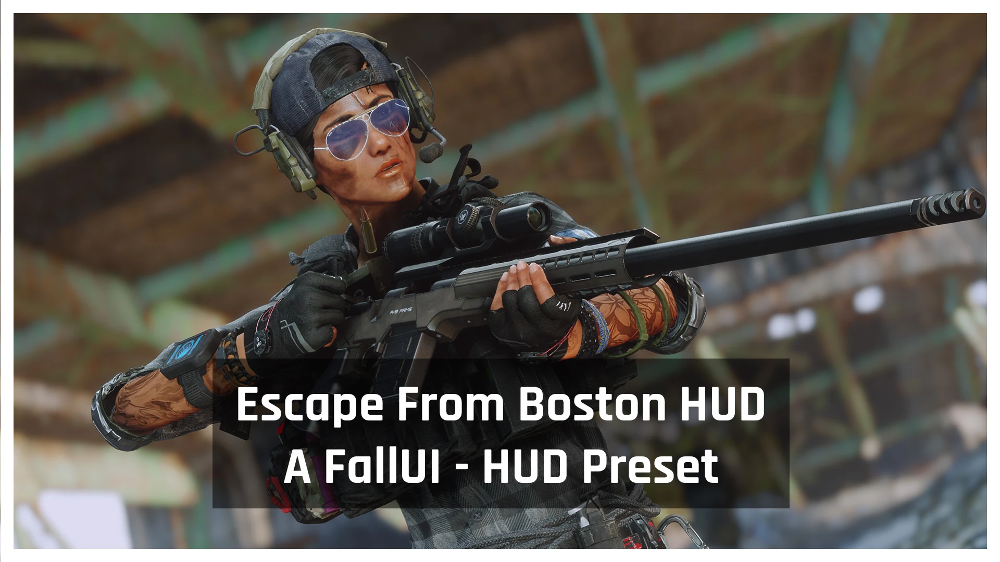
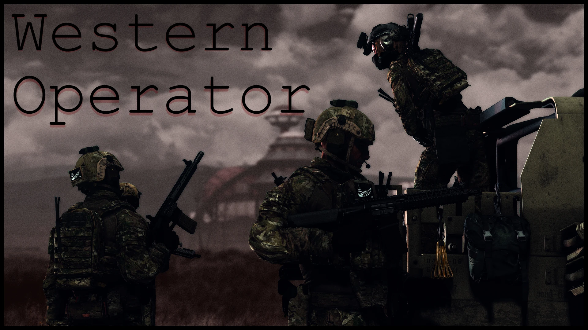
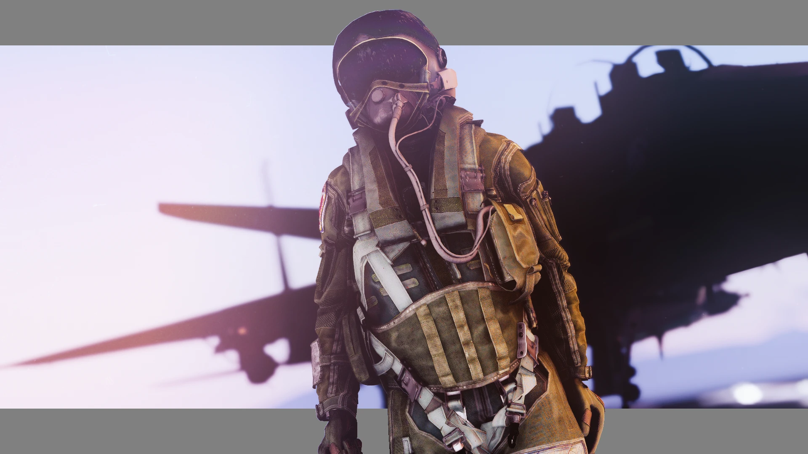

Maska-1SCH Helmet

Another simple armor mod I made to keep learning outfit porting to Fallout 4. The face shield can be altered (Deployed, Raised, Removed), It has 7 Matswaps, and 1 particular variant made for Altyn Guy
AN-M14 TH3 Grenade

Similar to my existing Tactical Molotov Model Replacer mod but this is standalone and doesn't replace the Molotov cocktail
Flight Deck Crew

This mod adds a flight deck crew outfit to the game with some color swap options
Currency Overhaul
This mod changes Caps to either USD, EUR, or RUB by replacing not only the model but the User interface icons as well.
B.E.Z. HUD

My B.E.Z. HUD Preset was designed to mimic the look of the HUD you can find in Escape From Tarkov as faithfully as possible while also making some personalized tweaks to better fit the HUD.
Western Operator

Western Operator Clothing Mod for Fallout 4
Jet Fighter Pilot

FEEEEWW WROOOOOM A DO DO DO DO PEW PEW PEWPEW PEW DIVE BOMB!!! HIT THE CONSENTRATED FIST!!!
Tarkov Operators

A port of USEC Josh and USEC Michael to Fallout as quest based companions.